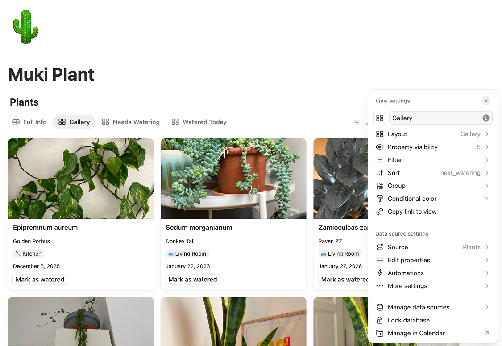
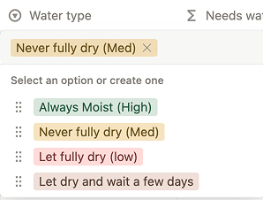
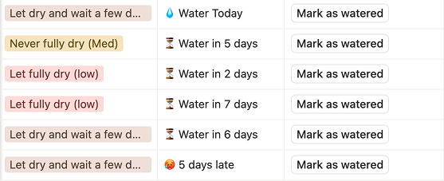

After canceling my plant care app subscription with v1.0, I've been using the tracker daily. The core functionality works, but I wanted to add some improvements to make it easier to use and some details to make me smile.
Version 1.1 focuses on visual improvements and also a lot of nice to have that I left out in the first version like adding plants common name, adding pictures, adding watering type info and adding a different message when I need to water.
Finding plants
Plant pictures
The biggest and most enjoyable difference was adding images. Scrolling through plant names works, but seeing thumbnails I can identify plant way easier plus i like seeing the pics.
- I added a new property: pic type:files & media
- Using property type instead of adding pictures to the page body made photographing plants much easier. On mobile, it automatically prompts the camera to take and upload images. (Bonus point for Notion: I could continue the process while the image was still uploading).
- Then I created a new view: Gallery and set the new property to display in the thumbnails. I did the same for view: Needs watering. I kept the table view to visualize the full info of the plants. Easier to reference or edit multiple properties.

Common name and scientific name
Along the lines of helping ID plants I separated the Plant name input in two properties:
- common_name type:text
- scientific_name type:text
When I started to take care of my plants one of the first things I did was start looking for info online where I came across their scientific name. Knowing the plant scientific name helped me to understand how to take care of them, similar families, similar care, similar propagation type.
Still, I refer to some plants by their common name mostly when the scientifict name is hard to remember/pronounce or when the plant name is too good to let go. Like Lengua de suegra (mother in law tongue)
Small tweaks
-
Emojis instead of color for Rooms: Instead of having different colors for each room I unified them to grey and added emojis to the Room property values to make them scannable at a glance and adds meaning, which in this case color doesn’t have.
- 🛋️ Living Room
- 🛏️ Bedroom
- 🍳 Kitchen
- 🚿 Bathroom
-
I added sorting to the Needs Watering view:
- 1. Days late (descending) - urgent plants first
- 2. Room (ascending) - grouped by location
Though I'm still testing if days-late based grouping actually helps my routine or if I prefer tackling the plants by location.
I also added descriptions to formula properties so future-me remembers what each calculation does without needing to decode the formula syntax.
Watering improvements
Water Requirements
"How often do I have to water it?" is the most common question when getting a new plant. And also some of the most misleading online advice about plant.
So, how often should you water? It depends on many factors: climate and season, where the plant is located, plant size, pot size, root development, and more.
What helped me answer this question is to think: How dry should the soil get between waterings? Some plants like to dry out completely before getting more water, while others prefer consistently moist soil. Once I started thinking this way, my plants did much better.
I grouped my plants based on soil requeriments and I added a new property to the database to reflect this: Water type type:select.
- 🟢 Always Moist: Alocasia, some Ferns
- 🟠 Never Fully Dry: Aglaonema, Ficus, Philodendron, Calatheas
- 🔴 Let Fully Dry: Succulents, Hoya, Dracaena
- 🟤 Let Dry + Wait: Most cacti, ZZ Plant
Before watering, I check the soil, reference the plant's requirement, and decide whether and how much to water.

💧 A more informative status message
The Next Watering checkbox was functional but not informative. I updated the formula to show a contextual messages:
- "Water today" when it's watering day
- "X days late" when overdue (helps prioritize!)
- "Water in X days" for future watering dates
This turned out to be very useful for trip planning. Before traveling, I can check which plants will need water soon and pre-water them if the timing is close enough.
This is the updated formula for Next Watering property:

What's Next
The most important addition for v1.2 will be seasonal schedules. My plants need different watering frequencies in winter versus summer, and manually updating each plant's frequency isn't sustainable.
Other ideas on the list:
Check v1.1 in Notion → You can duplicate it and use it as your starting point.